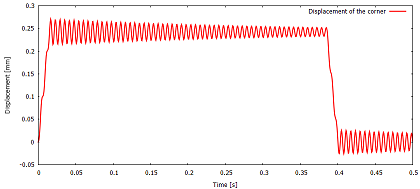

Beam under on/off loading: transient response
Description
A cantilever beam is loaded by a trapezoidal-pulse traction load at its free cross-section. The load is applied within 0.015 seconds and taken off after 0.37 seconds. The beam oscillates about its equilibrium configuration.
The beam is modeled as a solid. Trapezoidal rule is used to integrate the equations of motion in time. Rayleigh mass- and stiffness-proportional damping is incorporated. The dynamic stiffness is factorized for efficiency.

Goals
- Show how to create the discrete model.
- Apply distributed loading varying in time.
- Demonstrate trapezoidal-rule time stepping.
#Definitions
Basic imports.
using LinearAlgebra
using ArpackThis is the finite element toolkit itself.
using FinEtoolsThe linear stress analysis application is implemented in this package.
using FinEtoolsDeforLinear
using FinEtoolsDeforLinear.AlgoDeforLinearModuleInput parameters
E = 205000*phun("MPa");# Young's modulus
nu = 0.3;# Poisson ratio
rho = 7850*phun("KG*M^-3");# mass density
loss_tangent = 0.005;
L = 200*phun("mm");
W = 4*phun("mm");
H = 8*phun("mm");
tolerance = W/500;
qmagn = 0.1*phun("MPa");
tend = 0.5*phun("SEC");
#Create the discrete model
MR = DeforModelRed3D
fens,fes = H8block(L, W, H, 50, 2, 4)
geom = NodalField(fens.xyz)
u = NodalField(zeros(size(fens.xyz,1),3)) # displacement field
nl = selectnode(fens, box=[L L -Inf Inf -Inf Inf], inflate=tolerance)
setebc!(u, nl, true, 1)
setebc!(u, nl, true, 2)
setebc!(u, nl, true, 3)
applyebc!(u)
numberdofs!(u)
corner = selectnode(fens, nearestto=[0 0 0])
cornerzdof = u.dofnums[corner[1], 3]
material = MatDeforElastIso(MR, rho, E, nu, 0.0)
femm = FEMMDeforLinearMSH8(MR, IntegDomain(fes, GaussRule(3,2)), material)
femm = associategeometry!(femm, geom)
K = stiffness(femm, geom, u)
femm = FEMMDeforLinear(MR, IntegDomain(fes, GaussRule(3,3)), material)
M = mass(femm, geom, u)Find the boundary finite elements at the tip cross-section of the beam. The uniform distributed loading will be applied to these elements.
bdryfes = meshboundary(fes)Those facing in the positive X direction will be chosen:
tipbfl = selectelem(fens, bdryfes, facing=true, direction=[-1.0 0.0 0.0])A base finite element model machine will be created to evaluate the loading. The force intensity is created as driven by a function, but the function really only just fills the buffer with the constant loading vector.
function pfun(forceout::FVec{T}, XYZ::FFltMat, tangents::FFltMat, fe_label::FInt) where {T}
forceout .= [0.0, 0.0, qmagn]
return forceout
end
fi = ForceIntensity(FFlt, 3, pfun);The loading vector is lumped from the distributed uniform loading by integrating on the boundary. Hence, the dimension of the integration domain is 2.
el1femm = FEMMBase(IntegDomain(subset(bdryfes,tipbfl), GaussRule(2,2)))
F = distribloads(el1femm, geom, u, fi, 2);The loading function is defined as a time -dependent multiplier of the constant distribution of the loading on the structure.
function tmult(t)
if (t <= 0.015)
t/0.015
else
if (t >= 0.4)
0.0
else
if (t <= 0.385)
1.0
else
(t - 0.4)/(0.385 - 0.4)
end
end
end
end
#Time step determination
We figure out the fundamental mode frequency, which will determine the time step is a fraction of the period.
evals, evecs = eigs(K, M; nev=1, which=:SM);The fundamental angular frequency is then:
@show omega_f = sqrt(evals[1]);We take the time step to be a fraction of the period of vibration in the fundamental mode.
@show dt = 0.05 * 1/(omega_f/2/pi);
#Damping model
We take the damping to be representative of what's happening at the fundamental vibration frequency.
For a given loss factor at a certain frequency $\omega_f$, the stiffness-proportional damping coefficient may be estimated as 2losstangent/\omegaf$, and the mass-proportional damping coefficient may be estimated as 2losstangent*\omegaf$.
Rayleigh_mass = (loss_tangent/2)*omega_f;
Rayleigh_stiffness = (loss_tangent/2)/omega_f;Now we construct the Rayleigh damping matrix as a linear combination of the stiffness and mass matrices.
C = Rayleigh_stiffness * K + Rayleigh_mass * MThe time stepping loop is protected by let end to avoid unpleasant surprises with variables getting clobbered by globals.
ts, corneruzs = let dt = dt, F = FInitial displacement, velocity, and acceleration.
U0 = gathersysvec(u)
v = deepcopy(u)
V0 = gathersysvec(v)
U1 = fill(0.0, length(V0))
V1 = fill(0.0, length(V0))
F0 = deepcopy(F)
F1 = fill(0.0, length(V0))
R = fill(0.0, length(V0))Factorize the dynamic stiffness
DSF = cholesky((M + (dt/2)*C + ((dt/2)^2)*K))The times and displacements of the corner will be collected into two vectors
ts = Float64[]
corneruzs = Float64[]Let us begin the time integration loop:
t = 0.0;
step = 0;
F0 .= tmult(t) .* F
while t < tend
push!(ts, t)
push!(corneruzs, U0[cornerzdof])
t = t+dt;
step = step + 1;
(mod(step,100)==0) && println("Step $(step): $(t)")Set the time-dependent load
F1 .= tmult(t) .* FCompute the out of balance force.
R = (M*V0 - C*(dt/2*V0) - K*((dt/2)^2*V0 + dt*U0) + (dt/2)*(F0+F1));Calculate the new velocities.
V1 = DSF\R;Update the velocities.
U1 = U0 + (dt/2)*(V0+V1);Switch the temporary vectors for the next step.
U0, U1 = U1, U0;
V0, V1 = V1, V0;
F0, F1 = F1, F0;
if (t == tend) # Are we done yet?
break;
end
if (t+dt > tend) # Adjust the last time step so that we exactly reach tend
dt = tend-t;
end
end
ts, corneruzs # return the collected results
end
#Plot the results
using Gnuplot
@gp "set terminal windows 0 " :-
@gp :- ts corneruzs./phun("mm") "lw 2 lc rgb 'red' with lines title 'Displacement of the corner' "
@gp :- "set xlabel 'Time [s]'"
@gp :- "set ylabel 'Displacement [mm]'"The end.
trueThis page was generated using Literate.jl.